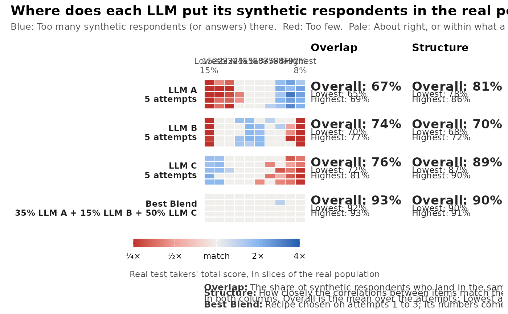

How well do synthetic respondents cover the real population?
Source:R/ai-coverage.R
synthetic_coverage.RdExperimental. synthetic_coverage() compares synthetic respondents
from one or more language models (for example from
simulate_llm_respondents(), run several times) with real responses to
the same items, and finds the blend of models that matches the real
population best. gg_coverage() draws the result as a coverage strip:
One row per model and attempt, one column per slice of the real
population, coloured by whether the model puts too many (blue) or too
few (red) synthetic respondents in that slice.
Arguments
- synthetic
a named list with one element per language model. Each element holds that model's attempts: A list of response data frames or
simulate_llm_respondents()results, one per attempt (a single data frame or result counts as one attempt).- real
a data frame of real responses to the same items (columns matched by name). Can be
NULLwithslices = "group"andtarget.- slices
what the columns of the strip are:
"score","theta","group"or"item"(see Details).- group
optional name of a column that holds the group or persona of each respondent, in
realand in the synthetic data (or in thepersonasof asimulate_llm_respondents()result).- within_group
with
groupandslices = "score"or"theta", compare the shares within each group, so that the mix of groups does not count (see Details)?- target
with
slices = "group"and no real data, the intended share of each group: A named vector of proportions.- model
with
slices = "theta", an optional unidimensional model frommirt::mirt()fitted to the real data.- n_slices
number of score or theta slices (per group with
group).- conf
confidence level for the noise check.
- cor
correlations for the structure check:
"auto","polychoric"or"pearson".- blend
find the best blend of the models?
- holdout
choose the blend on half of the attempts and report it on the other half?
NULLdoes so when every model has four or more attempts.- step
grid step for the blend weights.
- seed
random seed for the pooled sample behind a blend's structure.
Value
An object of class mv_coverage: A list with summary (a tibble
with one row per model, and one for the blend, giving the Overall,
Lowest and Highest overlap and structure over the attempts), cells
(the synthetic and real share in every slice for every model and
attempt), attempts (overlap and structure of every attempt), blend
(weights, recipe and the attempts used), slices (the slice
definitions) and notes. It has print(), tidy() and autoplot()
methods.
Details
Slices. By default (slices = "score") the slices are the deciles of
the real total score, so each holds about 10% of real people (ties in the
score can make them uneven; when the score has n_slices values or
fewer, each value is its own slice). slices = "theta" uses deciles of
EAP scores from a unidimensional model fitted to the real data (or the
model given as model). slices = "group" uses the groups in the column
named by group (for example personas), and slices = "item" switches to
item mode: One column per item for right/wrong items, or one column per
answer category for polytomous (for example Likert) items. With group
and slices = "score" or "theta", the deciles are formed within each
group. By default the shares are then taken over all respondents, so the
mix of groups counts too: A model with too few respondents from one group
shows red across that group's slices. With within_group = TRUE the
shares are taken within each group instead, so only how each group's
respondents spread over that group's slices counts, and Overlap is the
mean over the groups. Use it when the number of synthetic respondents per
group was set by design (for example the same number for each country)
and does not need to match the real data.
Overlap is the share of synthetic respondents (or answers) that fall in the same slices as real ones: The sum over slices of the smaller of the synthetic and the real share, which is one minus the total variation distance. In item mode it is computed for each item and averaged over the items (Item Overlap). 100% means the same mix as the real data.
Structure is 100% minus the mean absolute difference between the
inter-item correlations of the real and the synthetic responses
(polychoric correlations when the polycor package is installed and
cor = "auto", otherwise Pearson correlations). It catches synthetic
data that match every slice but relate the items to each other in a
different way.
Noise. A cell is coloured only when the gap between the synthetic
and the real share is larger than a real sample of the same size would
show by chance (outside the conf interval of a binomial proportion);
all other cells are drawn as a match.
Best Blend. With two or more models and blend = TRUE, the function
searches a grid of weights (steps of step) for the recipe whose mixture
of synthetic respondents has the highest overlap: A blend's share in a
slice is the weighted sum of the models' shares. With four or more
attempts per model (or holdout = TRUE), the recipe is chosen on the
first half of the attempts and its numbers are reported on the other
half, so that it is not judged on the data it was chosen on. The
structure of a blend is computed on a pooled sample drawn with the
recipe's weights. See blend_llms() to search again with other settings.
Synthetic respondents are experimental: Use the coverage strip to compare models and to decide how to combine them, not to replace a field test.
Examples
# made-up example: three "models" whose respondents differ from the
# real population in different ways, five attempts each
set.seed(1)
a <- matrix(rlnorm(12, 0.2, 0.3)); d <- matrix(rnorm(12))
real <- as.data.frame(simdata(a, d, 1000, itemtype = "dich"))
llm <- function(mu, s) lapply(1:5, function(i) as.data.frame(
simdata(a, d, 200, itemtype = "dich", Theta = matrix(rnorm(200, mu, s)))))
cov <- synthetic_coverage(list("LLM A" = llm(0.8, 0.7), "LLM B" = llm(0, 0.4),
"LLM C" = llm(-0.6, 0.9)), real)
cov
#> <mv_coverage> 3 model(s), 12 item(s), coverage of real total-score slices (EXPERIMENTAL)
#> model attempts overlap_overall overlap_lowest overlap_highest
#> LLM A 5 67% 65% 69%
#> LLM B 5 74% 70% 77%
#> LLM C 5 76% 72% 81%
#> Best Blend 2 93% 92% 93%
#> structure_overall structure_lowest structure_highest
#> 81% 78% 86%
#> 70% 68% 72%
#> 89% 87% 90%
#> 90% 90% 91%
#>
#> Best Blend: 35% LLM A + 15% LLM B + 50% LLM C (chosen on attempts 1 to 3; its numbers come from attempts 4 to 5)
gg_coverage(cov)
